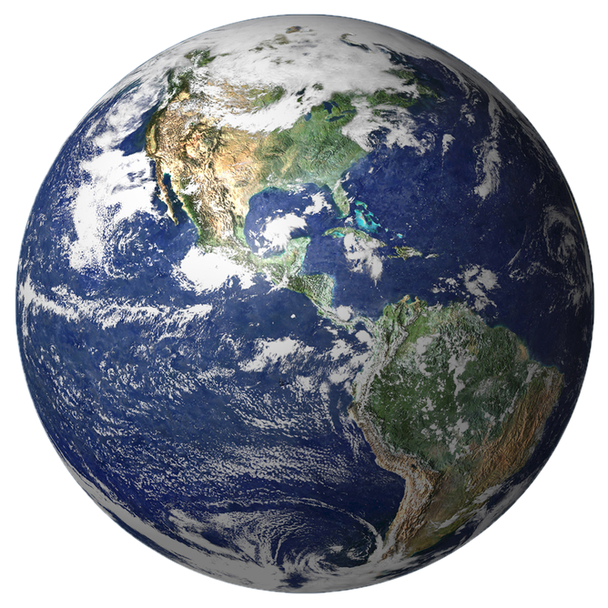
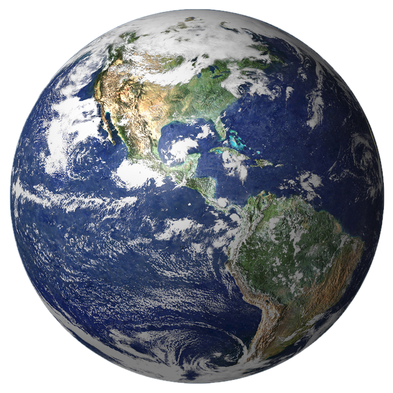
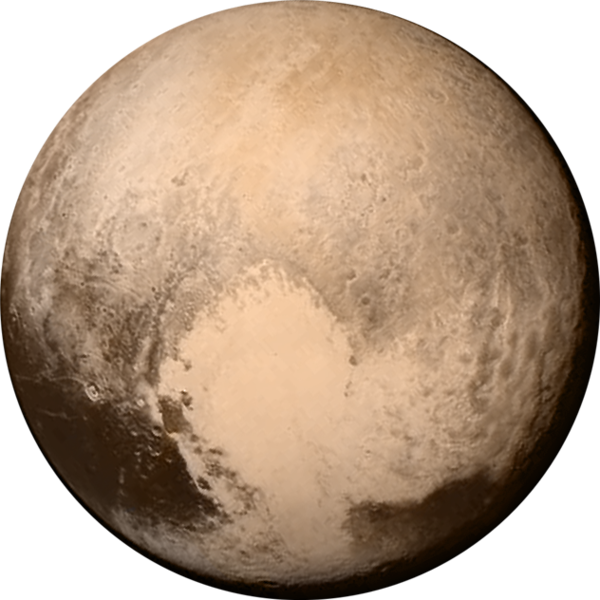
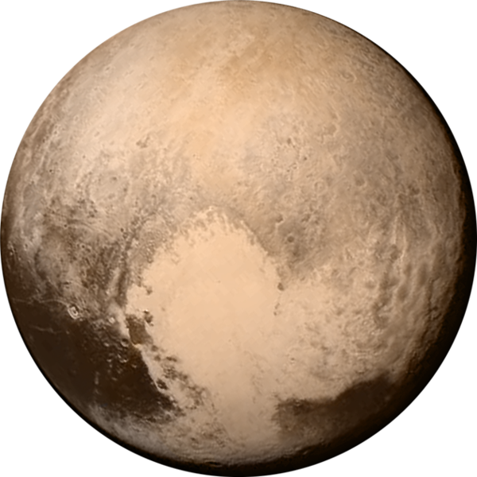

Sistema Solar
Conheça os corpos celestes do nosso Sistema Solar

 



 

O Sistema Solar é um sistema planetário composto pelo Sol e por uma vasta coleção de corpos celestes que orbitam ao seu redor. É um dos sistemas estelares mais bem estudados e fascinantes, não apenas pela sua complexidade astronômica, mas também por ser o lar do nosso planeta Terra. No centro do Sistema Solar, o Sol brilha intensamente, sendo a fonte primária de energia que sustenta a vida na Terra e nos outros planetas. Ao redor do Sol, orbitam oito planetas principais: Mercúrio, Vênus, Terra, Marte, Júpiter, Saturno, Urano e Netuno. Cada planeta possui características únicas, desde o pequeno e rochoso Mercúrio até os gigantes gasosos como Júpiter e Saturno, com seus sistemas de anéis impressionantes. Além dos planetas, o Sistema Solar também inclui asteroides, cometas, planetas-anões (como Plutão) e uma vasta quantidade de corpos menores que orbitam o Sol. Estes corpos variam enormemente em tamanho, composição e órbita, contribuindo para a riqueza e diversidade do sistema. A exploração do Sistema Solar tem sido uma das principais metas da exploração espacial humana, com missões robóticas e telescópios espaciais revelando cada vez mais detalhes sobre seus segredos. Estudar o Sistema Solar não apenas nos ajuda a entender a formação e evolução dos planetas, mas também lança luz sobre as origens da vida na Terra e as possibilidades de vida em outros lugares do universo. Em resumo, o Sistema Solar é um exemplo magnífico de como a gravidade e a física celestial moldam nosso cosmos, oferecendo-nos uma visão fascinante do nosso lugar no universo.

O Sol

O Sol, nossa estrela mãe, é uma esfera incandescente de gás que brilha no centro do nosso Sistema Solar, proporcionando calor, luz e energia para todos os corpos celestes que o orbitam. Com uma idade estimada de cerca de 4,6 bilhões de anos, o Sol está na metade de sua vida útil, uma vez que se formou a partir da condensação de uma nuvem molecular de gás e poeira há bilhões de anos atrás. Localizado a uma distância média de aproximadamente 150 milhões de quilômetros da Terra, o Sol possui um diâmetro de cerca de 1,4 milhões de quilômetros, o que o torna cerca de 109 vezes maior que a Terra. Sua massa colossal, composta principalmente de hidrogênio (cerca de 74%) e hélio (cerca de 24%), exerce uma gravidade intensa que mantém os planetas e outros corpos celestes em órbita ao seu redor. A energia do Sol é gerada através de um processo chamado fusão nuclear, no qual átomos de hidrogênio são fundidos para formar hélio, liberando enormes quantidades de energia no processo. Esta energia é emitida na forma de radiação e luz, que viaja pelo espaço até alcançar os planetas e outros corpos do Sistema Solar, incluindo a Terra. A temperatura na superfície do Sol é de aproximadamente 5.500 graus Celsius, enquanto no seu núcleo, onde ocorre a fusão nuclear, alcança incríveis 15 milhões de graus Celsius. Essa temperatura extrema e a pressão intensa criam as condições ideais para a fusão nuclear ocorrer de forma eficiente, transformando hidrogênio em hélio e liberando uma quantidade imensa de energia que sustenta a vida como a conhecemos. Além de sua função vital como fonte de luz e calor, o Sol também influencia fortemente o clima e as condições atmosféricas de todos os planetas do Sistema Solar. As tempestades solares, por exemplo, podem afetar as comunicações via satélite e as redes elétricas aqui na Terra, destacando sua influência não apenas como fonte de vida, mas também como um elemento essencial para o funcionamento de nossa civilização tecnológica. Para os observadores na Terra, o Sol aparece como um disco brilhante no céu diurno, proporcionando um espetáculo celestial inigualável durante os eclipses solares totais, quando a Lua temporariamente bloqueia sua luz. Estudar o Sol e seu comportamento não só nos ajuda a entender melhor nossa própria estrela, mas também a compreender melhor os processos fundamentais que regem as estrelas em todo o universo. Em resumo, o Sol é muito mais do que uma simples esfera de gás incandescente. Ele é o coração pulsante do nosso Sistema Solar, fornecendo a energia necessária para sustentar a vida e moldar o ambiente em que vivemos. Com sua majestade e poder inigualáveis, o Sol continua a ser uma fonte de fascinação e inspiração para cientistas, astrônomos e admiradores do céu em todo o mundo.
Planetas
Mercúrio
É o planeta mais próximo do Sol e o menor do Sistema Solar. Sua superfície é coberta por crateras de impacto devido à falta de atmosfera significativa para protegê-lo. A temperatura pode variar drasticamente entre o lado iluminado (cerca de 430 graus Celsius) e o lado escuro (cerca de -180 graus Celsius).
Tamanho: Pequeno, aproximadamente 4.880 quilômetros de diâmetro.
Atmosfera: Extremamente fina e rarefeita, praticamente inexistente.
Distância do Sol: Média de aproximadamente 58 milhões de quilômetros.
Venus
É conhecido como o planeta irmão da Terra devido ao seu tamanho e composição similares, mas é extremamente hostil. Sua atmosfera densa é composta principalmente de dióxido de carbono e produz um efeito estufa descontrolado que aquece sua superfície a cerca de 470 graus Celsius, tornando-a o planeta mais quente do Sistema Solar.
Tamanho: Similar à Terra, com cerca de 12.104 quilômetros de diâmetro.
Atmosfera: Espessa, composta principalmente de dióxido de carbono (CO2) e nuvens de ácido sulfúrico.
Distância do Sol: Média de aproximadamente 108 milhões de quilômetros.
Terra
É o único planeta conhecido por abrigar vida. Possui uma atmosfera rica em oxigênio, água líquida na superfície, e uma biosfera diversificada que inclui desde oceanos profundos até desertos áridos. A Lua, seu único satélite natural, desempenha um papel crucial na estabilização do eixo de rotação da Terra.
Tamanho: Médio, com aproximadamente 12.742 quilômetros de diâmetro.
Atmosfera: Rica em oxigênio e nitrogênio, fundamental para sustentar a vida.
Distância do Sol: Média de aproximadamente 150 milhões de quilômetros.
Marte
Apelidado de "planeta vermelho" devido à sua superfície coberta por óxido de ferro. Tem uma atmosfera muito fina, principalmente de dióxido de carbono, e possui características geológicas intrigantes, como o Monte Olimpo, o maior vulcão do Sistema Solar, e Valles Marineris, um sistema de cânions gigantes.
Tamanho: Menor que a Terra, com aproximadamente 6.779 quilômetros de diâmetro.
Atmosfera: Muito fina, composta principalmente de dióxido de carbono (CO2) e nitrogênio.
Distância do Sol: Média de aproximadamente 228 milhões de quilômetros.
Júpiter
É o maior planeta do Sistema Solar, composto principalmente de hidrogênio e hélio. Possui um campo magnético extremamente poderoso e uma atmosfera turbulenta que inclui a Grande Mancha Vermelha, uma tempestade antiga maior que a Terra. Tem um sistema de anéis e mais de 70 luas conhecidas.
Tamanho: Gigante gasoso, com cerca de 139.820 quilômetros de diâmetro.
Atmosfera: Profunda e turbulenta, composta principalmente de hidrogênio e hélio.
Distância do Sol: Média de aproximadamente 778 milhões de quilômetros.
Saturno
Conhecido por seus impressionantes anéis compostos principalmente de partículas de gelo. Tem a segunda maior lua do Sistema Solar, Titã, que possui uma atmosfera densa e é o único corpo celeste conhecido, além da Terra, onde se encontram corpos líquidos estáveis em sua superfície.
Tamanho: Gigante gasoso, com cerca de 116.460 quilômetros de diâmetro.
Atmosfera: Profunda, composta principalmente de hidrogênio e hélio, além de nuvens de metano.
Distância do Sol: Média de aproximadamente 1,4 bilhões de quilômetros.
Urano
É um planeta gigante de gelo com um eixo de rotação inclinado quase 90 graus em relação ao plano orbital do Sistema Solar, o que resulta em mudanças sazonais extremas em seus polos. Tem um sistema de anéis e é cercado por várias luas pequenas.
Tamanho: Gigante gasoso, com cerca de 50.724 quilômetros de diâmetro.
Atmosfera: Profunda, composta principalmente de hidrogênio, hélio e metano.
Distância do Sol: Média de aproximadamente 2,9 bilhões de quilômetros.
Netuno
É o último planeta do Sistema Solar, conhecido por sua atmosfera dinâmica de nuvens e ventos extremamente rápidos. Foi o primeiro planeta a ser descoberto matematicamente antes de ser observado diretamente através de um telescópio. Tem um sistema de anéis e luas, incluindo Tritão, que tem geysers ativos em sua superfície.
Tamanho: Gigante gasoso, com cerca de 49.244 quilômetros de diâmetro.
Atmosfera: Profunda, composta principalmente de hidrogênio, hélio e metano.
Distância do Sol: Média de aproximadamente 4,5 bilhões de quilômetros.
Plutão
Um planeta anão no Cinturão de Kuiper, originalmente classificado como o nono planeta do Sistema Solar. Sua atmosfera é tênue e composta principalmente de nitrogênio, metano e monóxido de carbono congelados. Tem uma órbita excêntrica e uma lua, Caronte, que é quase metade do tamanho de Plutão e orbita muito próxima a ele.
Tamanho: Pequeno, com cerca de 2.377 quilômetros de diâmetro.
Atmosfera: Tênue, composta principalmente de nitrogênio, metano e monóxido de carbono.
Distância do Sol: Varia de aproximadamente 4,4 bilhões a 7,4 bilhões de quilômetros, devido à sua órbita excêntrica no Cinturão de Kuiper.